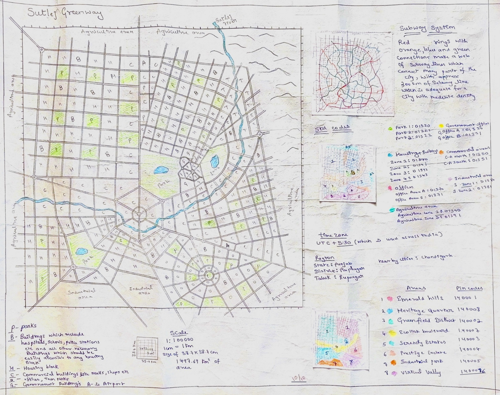

Home Page – Introduction
What is the course about?
The course is about learning how to solve problems using algorithms.
What kind of data structures and algorithms have you studied?
In our study of data structures and algorithms, we applied several key principles to optimize solutions. Decomposition helped break down complex problems, while pattern recognition improved string matching through algorithms like KMP and Boyer-Moore. Abstraction simplified graphs and trees for easier operations, and brave and cautious travel guided our approach in algorithms like Dijkstra’s. Pruning was used in Kruskal’s and Prim’s algorithms to eliminate redundant edges, while lazy propagation optimized tree-based range queries. Sliding window techniques were applied to substring matching, and edge relaxation refined paths in shortest path algorithms. Balancing and rotation kept tree structures efficient, and memoization avoided redundant calculations in dynamic programming. Finally, invariants ensured correctness in algorithms like Bellman-Ford. These principles enabled us to develop efficient and accurate solutions.
How do you connect the course with real-time applications?
The course in data analysis and algorithms directly links with real-world applications through its ability to provide foundational techniques in the solution of complicated problems that crop up in numerous fields. For example, algorithms used for finding the shortest path, including Dijkstra's and Bellman-Ford algorithms, are deployed in GPS navigation systems. Graph algorithms are elementary for social network analysis, facilitating recommendation systems, fraud detection, and community detection among others. Sorting algorithms help in database management, which means ordering data in an efficient manner for quick retrieval. String matching algorithms such as KMP and Boyer-Moore are very important for text search engines, DNA sequence analysis, and plagiarism detection. Dynamic programming and memoization are applied in optimising resource allocation problems and in artificial intelligence for decision-making processes. Additional structures for building an efficient search engine, real-time analytics platform, and even a game engine involve trees and graphs. Once the algorithms and data structures are mastered, the performance optimisation and improvement of decision-making to solve real-world problems can be addressed in diverse fields such as e-commerce, healthcare, and transportation.
Course Project Introduction
* Provide the Details of the problem space and how it was arrived at. Summary of findings from the white paper Reflection on city design and how business cases were identified
The problem space was identified by analysing Mumbai’s subway system, focusing on overcrowding, inefficiency, and commuter challenges, especially during peak hours. Key issues include congestion at interchange stations like Dadar, long wait times, and the lack of efficient scheduling or alternative routes. The system’s capacity cannot meet the demands of the growing population, and commuters often resort to costlier and slower alternatives. Findings from the white paper emphasised the need for better scheduling, infrastructure upgrades, and the introduction of real-time tracking to improve operational efficiency. Business cases were identified in areas like increasing passenger capacity, reducing congestion, improving safety, and adopting electronic ticketing systems. These solutions aim to enhance the efficiency, scalability, and sustainability of the subway system, ensuring it can meet the needs of Mumbai’s expanding population.
Problem definition and team details:
The problem of subway system optimisation involves improving the efficiency, capacity, and scalability of urban train networks to accommodate growing commuter demand. It focuses on minimising congestion, reducing travel time, optimising scheduling, and ensuring the system’s sustainability and cost-effectiveness in big cities.
| Si. No. | Roll Number | Name |
|---|---|---|
| 1 | 102 | Mohammed Wasif Ali |
| 2 | 105 | Yashas A Bhoomraddi |
| 3 | 108 | Hemant Darur |
| 4 | 155 | Farhan Sayed |
Business cases that each member is working on:
| Name | Function | Business Case Study |
|---|---|---|
| Mohammed Wasif Ali | Get the distance, get the time, safety management | Security and safety of passengers, calculating the distance and time |
| Yashas A Bhoomraddi | Predictive maintenance, hygiene management | Track and train upkeep, increase the number of passengers |
| Hemant Darur | Peak hour management, station management | Improve train schedule efficiency, congestion at station |
| Farhan Sayed | Passenger ticketing and billing, get your booking info | Electronic ticketing services, confirming the booking |
City Map
